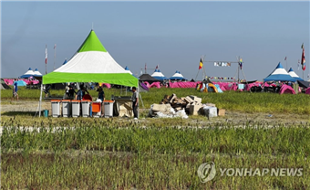

사회
새만금 잼버리에 대한 기업들의 사회적 책임

(사진=연합뉴스) 풀만 무성한 야영장.
현재 각종 논란이 있는 잼버리에 대해 이미 세계적으로 이목이 집중된 행사인 만큼 기업들이 개입하여 지원을 하겠다고 했다.
삼성은 잼버리 참가자를 대상으로 오픈 캠퍼스 상업장 견학 프로그램을 운영한다 하였고 또 7일부터 임직원 150명을 투입하여 삼성전자 사업장 견학 프로그램을 가동하기로 하였으며 평택, 화성 반도체공장 수원 삼성이노베이션 뮤지엄 견학 프로그램을 학생들에게 제공해 글로벌 미래 인재들이 한국 첨단 IT산업을 체험할 수 있도록 할 계획이라 밝혔으며 삼성병원 의료지원단 파견, 간이화장실 및 전동카트 지원, 건강음료 20만 개 제공 등 다양한 지원 및 프로그램을 지원했다.
현대자동차 그룹은 10일까지 네덜란드와 일본, 말레이시아 국적의 스카우트 대운들을 대상으로 현대차 전주공장 견학 프로그램을 진행키로 했다. 전주공장을 ckc은 네덜란드 스카우트 대원들은 지난 7일 수소 버스 와 트럭 등 친환경 상용차 생산라인을 견학하기도 하였으며 현대자동차그룹은 현대차, 기아 남양연구소 등 견학 프로그램을 추가 운영하는 방안을 검토 중이기도 하며 11일 잼버리 메인행사 k팝 콘서트에 전북 현대모터스FC 홈구장을 공연장으로 제공하겠다고 밝혔다.
LG그룹은 잼버리에 참가들에게 가전과 로봇 디스플레이, 전장 제품과 배터리 등 LG미래기술 주력제품이 있는 서울 마곡 LG사이언스파크 내 이노베이션 갤러리와 LG전자 창원, 구미 사업장의 스마트 팩토리 견학 지원을 검토한다 하였습니다. 또 공주시에 생태수목원 화담숲 자연 생태 체험 등 관광 및 체험 프로그램도 검토 중이다.
대한항공 그룹은 최근 태풍 카눈으로 조기 철수를 결정한 잼버리 참가자들을 위해 12일까지 자사 신갈연수원을 숙소로 제공하기로 결정하여 총 200명을 수용하기로 했다.. 대한항공은 12일 까지 다양한 문화 체험 행상도 진행하기로 하였으며 대한민국 항공 사업에 대한 이해도를 높일 수 있도록 항공박물관 견학 프로그램도 운영할 계획이라 발표했다.
sk하이닉스 그룹은 이천과 청주 사업장에서 하루 100여명이 참가할 수 있는 팹 윈도 투어를 열었고 이걸 참여한 잼버리 참가자들이 반도체 생산과정과 기술들을 직접 살펴볼 수 있게 구성하였고 sk그룹 관계사들은 폭염에 따른 온열 질환자가 속출한 지난 주말부터 새만금 현장 자원 봉사와 물품, 통신 지원에 나섰다.
현대그룹은 임직원 봉사단 120여명을 잼버리 대회 현장에 긴급 파견했으며, 포스코그룹은 재해 구호협회를 통해 쿨스카프 1만장을 지원해 잼버리 현장에 배송했다.
이처럼 기업의 역할이 중요하다는 것을 알 수 있고 폭염대비, 다중 인파 관리 등 부실운영으로 논란중인 잼버리에 지원한 기업들은 이미지 상승, 기업의 홍보 등 거업에게도 이득이고 사회적으로 사실상 파행된 잼버리행사에 재계가 구원투수로 나서면서 기업의 사회적 책임을 다하고 있다는 평가가 나오고 있다.